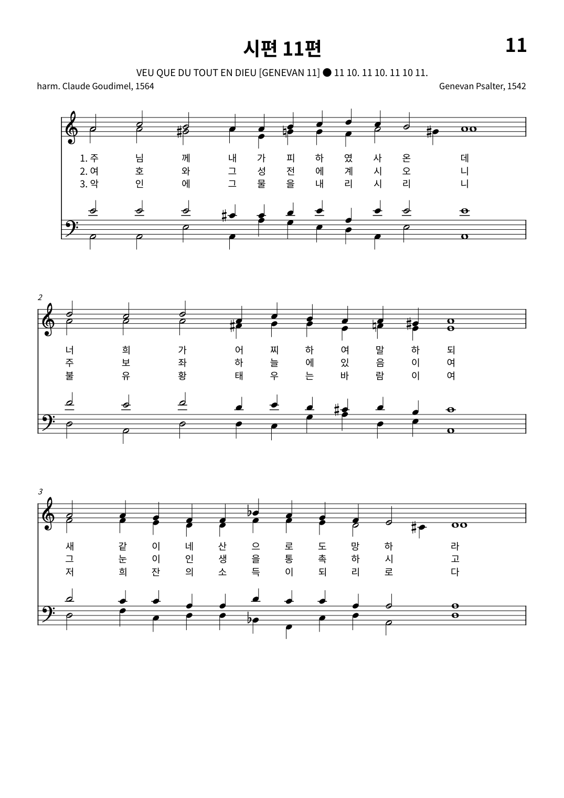
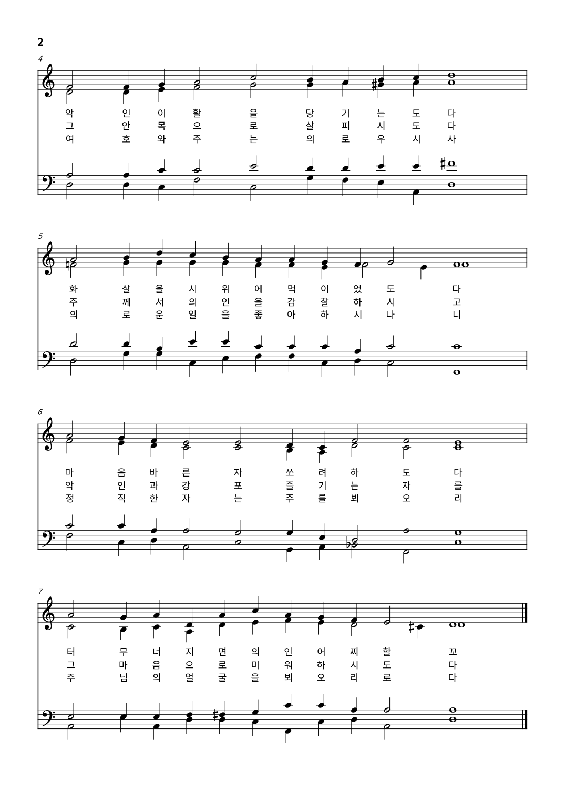

시편 11편
VEU QUE DU TOUT EN DIEU [GENEVAN 11] · 11 10. 11 10. 11 10 11.
곡조: Genevan Psalter, 1542 · 화성: Claude Goudimel, 1564 · 가사: 개역한글판 시편 11편 편역(AI 초벌 편역판 · 신학 감수 전) · 3절
악보 PDF MusicXML(출력용) MusicXML(반주용, 전주·반복 포함) 개역한글 시편 11편 읽기
악보


가사
1절 (시편 1~3절)
주님께 내가 피하였사온데
너희가 어찌하여 말하되
새 같이 네 산으로 도망하라
악인이 활을 당기는도다
화살을 시위에 먹이었도다
마음 바른 자 쏘려 하도다
터 무너지면 의인 어찌할꼬
주님께 내가 피하였사온데
너희가 어찌하여 말하되
새 같이 네 산으로 도망하라
악인이 활을 당기는도다
화살을 시위에 먹이었도다
마음 바른 자 쏘려 하도다
터 무너지면 의인 어찌할꼬
2절 (시편 4~5절)
여호와 그 성전에 계시오니
주 보좌 하늘에 있음이여
그 눈이 인생을 통촉하시고
그 안목으로 살피시도다
주께서 의인을 감찰하시고
악인과 강포 즐기는 자를
그 마음으로 미워하시도다
여호와 그 성전에 계시오니
주 보좌 하늘에 있음이여
그 눈이 인생을 통촉하시고
그 안목으로 살피시도다
주께서 의인을 감찰하시고
악인과 강포 즐기는 자를
그 마음으로 미워하시도다
3절 (시편 6~7절)
악인에 그물을 내리시리니
불 유황 태우는 바람이여
저희 잔의 소득이 되리로다
여호와 주는 의로우시사
의로운 일을 좋아하시나니
정직한 자는 주를 뵈오리
주님의 얼굴을 뵈오리로다
악인에 그물을 내리시리니
불 유황 태우는 바람이여
저희 잔의 소득이 되리로다
여호와 주는 의로우시사
의로운 일을 좋아하시나니
정직한 자는 주를 뵈오리
주님의 얼굴을 뵈오리로다